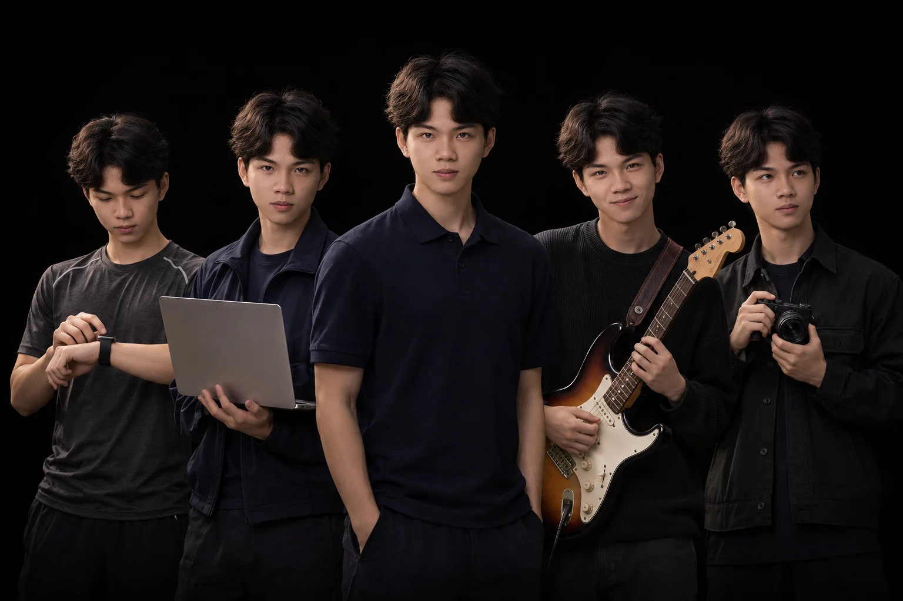

You got me
是我，陈煜
请坐。
稍等，
我叫一下同事。

专业团队 为你服务
陈煜
博客
关于
陈煜的博客
生活记录
琴
电吉他
电吉他
乐
音乐
音乐
影
摄影
摄影
雪山留影
雪山留影
雪山留影
爬雪山时拍下的一张照片。
阅读全文
→
机
Aelos 机器人挑战赛
机器人竞赛
职业探索与学习行动 Agent
职业探索 Agent
坛
Java 社区论坛
Java 社区论坛
职业探索与学习行动 Agent
华为 ICT 大赛项目
阅读全文
→
↓
做过的项目
进入书架
→